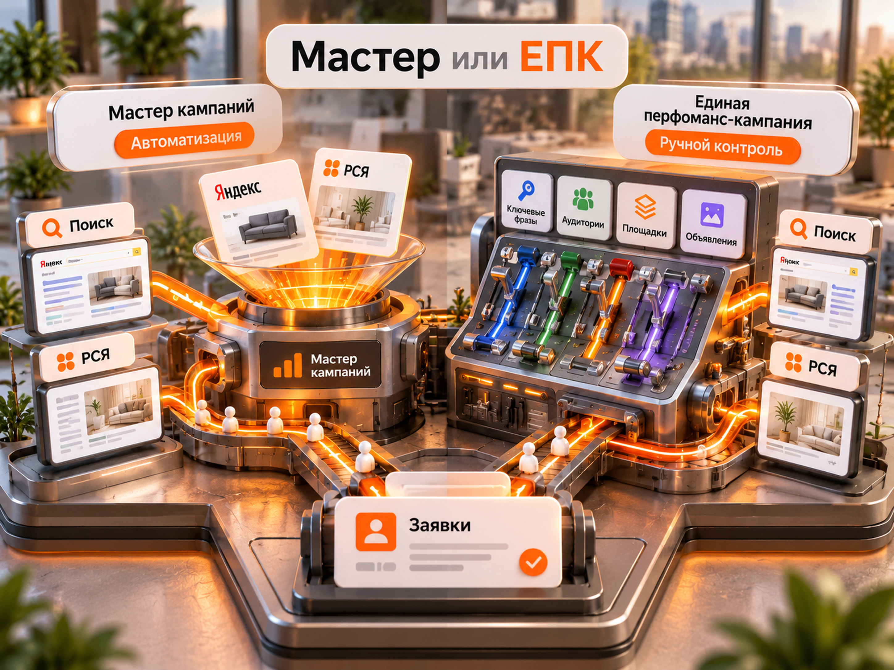

Блог о платном трафике
Мастер кампаний Яндекс Директ: как настроить и когда использовать
Мастер кампаний в Яндекс Директе - это инструмент автоматического запуска рекламы. Вы указываете сайт, выбираете аудиторию, цели и бюджет, а Директ помогает создать объявления и самостоятельно распределяет показы между доступными рекламными площадками.
Для продвижения сайта используется сценарий «Конверсии и трафик». Объявления могут показываться в поиске Яндекса и Рекламной сети Яндекса (РСЯ). Продвижение организации в Яндекс Картах подключается отдельно.
Главное ограничение Мастера кампаний - нельзя самостоятельно разделить показы на Поиск и РСЯ или выбрать конкретные площадки. Для более детального управления рекламой существует Единая перфоманс-кампания (ЕПК).
Я не считаю Мастер кампаний инструментом исключительно для новичков. В моих проектах он неоднократно давал результат лучше обычных кампаний. Поэтому использую его как для первого тестирования ниши, так и для поиска дополнительного трафика в уже работающих рекламных аккаунтах.
Что такое Мастер кампаний и как он работает
Мастер кампаний - это режим создания рекламы в Яндекс Директе, в котором значительная часть настроек автоматизирована.
После указания сайта система анализирует посадочную страницу и предлагает:
- Заголовки и тексты объявлений.
- Изображения и другие рекламные материалы.
- Тематические слова для подбора аудитории.
- Настройки аудитории и географии.
- Варианты недельного бюджета.
- Стратегию продвижения с учётом выбранных целей.
Рекламодатель может изменять предложенные настройки. Однако управление отдельными местами показа и некоторые другие профессиональные возможности недоступны.
В Мастере кампаний существуют разные сценарии: продвижение сайта, запуск рекламы без собственного сайта, Товарная кампания, продвижение товаров на маркетплейсах и привлечение подписчиков в Telegram-канал.
В этой статье я подробно рассматриваю «Конверсии и трафик» для продвижения сайта, поскольку именно этот сценарий чаще всего используется для получения заявок на услуги.
Где показывается реклама Мастера кампаний
В стандартном сценарии продвижения сайта реклама может размещаться в поисковой выдаче Яндекса и на площадках РСЯ. При подключении организации из Яндекс Бизнеса доступно также продвижение в Яндекс Картах.
Алгоритм распределяет показы между доступными размещениями в соответствии с настройками кампании и поставленной целью.
При этом есть важные особенности:
- Нельзя создать обычный Мастер кампаний только для Поиска или только для РСЯ.
- Нельзя вручную выбирать конкретные сайты для размещения.
- Нельзя добавлять отдельные площадки в список запрещённых.
- Можно ограничивать показы по поисковым запросам через минус-слова и настройки автотаргетинга.
- Можно отдельно анализировать результат Поиска и Сетей в статистике.
Разделить результаты в отчётах можно, а управление бюджетами этих двух направлений внутри Мастера разделить нельзя.
Когда стоит использовать Мастер кампаний
Я рассматриваю два основных сценария.
Первый запуск рекламы в новой нише
Предположим, компания впервые запускает Яндекс Директ.
Можно сразу создать отдельную кампанию на Поиске, ещё одну для РСЯ, подготовить разные аудитории и распределить между ними бюджет.
Но на этом этапе неизвестно, какое направление окажется эффективнее.
Мастер кампаний позволяет начать с одной кампании, получить статистику и проверить, откуда приходят реальные обращения.
Я использую его как первоначальную разведку:
- Настраиваю Яндекс Метрику и цели на реальные заявки.
- Запускаю Мастер кампаний с подходящей посадочной страницей.
- Даю стратегии накопить статистику.
- Проверяю стоимость и качество обращений.
- Сравниваю результаты Поиска и РСЯ.
- Решаю, какое направление развивать дальше.
Это не означает, что Мастер обязательно будет эффективнее отдельной поисковой кампании. Его задача - быстро проверить одну из возможных моделей привлечения клиентов.
Дополнительная кампания в работающем аккаунте
Второй сценарий - когда обычный Поиск и РСЯ уже настроены, но хочется получить дополнительный объём заявок.
Мастер использует собственную автоматизированную логику подбора трафика. Иногда она находит аудиторию, которую существующие кампании охватывают недостаточно эффективно.
Я неоднократно сталкивался с ситуациями, когда Мастер показывал результат лучше классической структуры в том же проекте.
Поэтому не вижу смысла отказываться от него только потому, что специалист умеет работать в режиме эксперта.
Мастер кампаний или ЕПК: что лучше
Мастер кампаний лучше подходит для быстрого запуска и проверки гипотез. ЕПК выбирают, когда необходим детальный контроль над структурой рекламы, местами размещения и аудиториями.
Но универсального победителя нет. Эффективность зависит от ниши, предложения, качества аналитики и конкретных настроек.
| Критерий | Мастер кампаний | ЕПК |
|---|---|---|
| Сложность запуска | Проще | Требует больше настроек |
| Поиск и РСЯ | Работают вместе | Можно разделять |
| Управление площадками | Автоматическое | Больше возможностей контроля |
| Ключевые фразы | Тематические слова и автотаргетинг | Подробная семантика и автотаргетинг |
| Настройка аудитории | Упрощённая | Более гибкая |
| Объявления | Система предлагает и комбинирует элементы | Больше возможностей настройки структуры |
| Бюджет | Недельный, с автоматическим распределением | Более гибкое управление |
| Главная задача | Быстрый запуск, проверка гипотез | Детальная оптимизация и масштабирование |
На практике Мастер и ЕПК могут использоваться одновременно.
Например, сформированный коммерческий спрос можно обрабатывать отдельной поисковой кампанией, а Мастер тестировать как дополнительный источник заявок.
При этом нужно следить за совокупной стоимостью привлечения клиентов. Если две кампании привлекают одну аудиторию, рост числа конверсий в интерфейсе не обязательно означает такой же прирост уникальных клиентов.

Как настроить Мастер кампаний в Яндекс Директе в 2026 году
Для запуска кампании нужно выбрать сценарий продвижения сайта, указать посадочную страницу, подготовить объявления, определить аудиторию, настроить цели и установить бюджет.
Разберём основные этапы.
Шаг 1. Создайте кампанию и укажите сайт
В Яндекс Директе нажмите «Добавить», затем «Кампанию» и выберите в Мастере кампаний сценарий «Конверсии и трафик».
Добавьте ссылку на страницу, которую собираетесь рекламировать.
Я рекомендую выбирать страницу конкретной услуги или товара, а не автоматически отправлять весь трафик на главную.
Например, если производство предлагает вывески, объёмные буквы и световые короба, для отдельных направлений могут понадобиться собственные посадочные страницы и кампании.
Это помогает точнее сформулировать предложение и контролировать рекламную экономику разных услуг.
Если организация размещена в Яндекс Картах, можно подключить соответствующее продвижение через Яндекс Бизнес. Это отдельная настройка, а не обязательная часть каждого запуска.
Шаг 2. Подготовьте объявления
Мастер автоматически предложит варианты заголовков, текстов и изображений на основе сайта.
Не рекомендую принимать все предложения без проверки.
В объявлении должны быть понятны:
- Конкретный товар или услуга.
- География работы.
- Реальное преимущество предложения.
- Условия, важные для принятия решения.
- Действие, которое нужно совершить пользователю.
Мастер комбинирует добавленные элементы и постепенно чаще показывает сочетания, которые считает эффективными.
Поэтому заголовки и тексты должны не только работать по отдельности, но и нормально сочетаться друг с другом.
Нейрообъявления
В Мастере кампаний также предусмотрена функция дополнительных объявлений, создаваемых с помощью Yandex Neuro Ads.
Система генерирует их на основе посадочной страницы и информации об организации.
Это отдельные объявления, а не просто комбинации заголовков и изображений.
Их статистику можно анализировать через Мастер отчётов по типу объявления «Нейрообъявление».
Я бы оценивал такой инструмент по реальным заявкам, а не по самому факту использования нейросети.
Шаг 3. Определите аудиторию
Мастер предлагает два варианта:
Подобрать оптимальную аудиторию. Система самостоятельно использует информацию с сайта и из объявлений.
Настроить вручную. Можно указать пол, возраст, устройства, интересы, привычки и тематические слова.
Тематические слова не равнозначны жёсткому списку ключевых фраз обычной поисковой кампании.
Например, для компании по изготовлению вывесок можно задать тематику наружной рекламы, световых вывесок и объёмных букв.
Но система не обязана ограничивать показы только точными формулировками из этого списка.
Дополнительно работают алгоритмы автотаргетинга.
Шаг 4. Настройте автотаргетинг и исключения
Полностью отключить автотаргетинг в стандартном Мастере кампаний нельзя. Однако можно ограничить категории запросов.
При ручной настройке аудитории доступны исключения для разных категорий:
- Узкие запросы.
- Широкие запросы.
- Альтернативные запросы.
- Сопутствующие запросы.
- Запросы с упоминанием собственного бренда.
- Запросы с упоминанием брендов конкурентов.
Также можно использовать минус-слова.
Это особенно важно для узких B2B-направлений, в которых широкий трафик быстро расходует бюджет, но плохо конвертируется в потенциальных клиентов.
Например, если компания продаёт промышленное оборудование, ей могут быть не нужны пользователи, которые ищут инструкции, чертежи или материалы для самостоятельного изготовления.
После запуска необходимо проверять поисковые запросы и исключать действительно нецелевой спрос.
Однако слишком агрессивные ограничения могут уменьшить охват и количество конверсий.
Шаг 5. Укажите регион и расписание
Регион должен соответствовать фактической географии бизнеса.
Если компания работает только в Ростове-на-Дону, запуск на всю Россию без отдельной задачи может привести к нецелевым обращениям.
Для производства с доставкой по стране слишком узкая география, наоборот, способна ограничить продажи.
Расписание следует выбирать с учётом особенностей обработки заявок.
Если клиенты могут оставлять обращения круглосуточно и компания обрабатывает их на следующий день, показы не обязательно ограничивать рабочими часами.
Отдельно учитывайте, что продвижение привязанной организации в Яндекс Картах имеет собственные особенности геотаргетинга.
Шаг 6. Подключите Яндекс Метрику и цели
Я считаю настройку аналитики одним из важнейших этапов.
Если задача рекламы - получать заявки, система должна оптимизироваться на действия, которые действительно связаны с обращениями потенциальных клиентов.
Основными целями могут быть:
- Успешная отправка формы.
- Подтверждённый звонок.
- Оформление заказа.
- Запись на услугу.
- Другое проверяемое целевое действие.
Не рекомендую выбирать основными целями обычное посещение страницы или нажатие на кнопку, если это действие не подтверждает получение заявки.
Например, клик по кнопке мессенджера ещё не означает, что пользователь отправил сообщение.
Если алгоритм обучается на таких действиях, он может находить людей, которые часто нажимают кнопки, но не становятся клиентами.
Для компаний с CRM полезно передавать данные о квалифицированных лидах и продажах обратно в аналитику. Это помогает оценивать рекламу по более содержательным показателям.
Подробнее об этом я рассказывал в материале «Офлайн-конверсии в Яндекс Директе».
Шаг 7. Выберите стратегию и модель оплаты
Для продвижения сайта в Мастере доступны два основных направления оптимизации:
Максимум переходов. Система стремится привлечь посетителей с учётом выбранных ограничений.
Максимум целевых действий. Система оптимизирует рекламу под достижения указанных целей.
Для второго варианта существуют настройки с оплатой за клики и с оплатой за конверсии.
Я предпочитаю ориентироваться на реальные заявки. Но это не означает, что оплату за конверсии нужно включать автоматически в каждом новом проекте.
Если целевые действия происходят редко, а цена цели установлена слишком низкой, кампания может почти перестать показывать объявления.
В такой ситуации иногда целесообразнее использовать оплату за клики с оптимизацией на конверсии, получить первоначальную статистику и затем пересмотреть модель оплаты.
Подробно механизм разобран в статье «Оплата за конверсии в Яндекс Директе».
Шаг 8. Проверьте настройки перед запуском
Перед отправкой кампании на модерацию я проверяю:
- Корректность посадочной страницы и её доступность.
- Соответствие объявлений рекламируемой услуге.
- Регион и расписание показов.
- Аудиторию, категории автотаргетинга и минус-слова.
- Счётчик Метрики и работоспособность целей.
- Стратегию, стоимость целевого действия и недельный бюджет.
- Корректность ссылок и UTM-меток.
После модерации обязательно проверяю, что кампания действительно получает показы, а целевые действия фиксируются корректно.
Какой бюджет нужен для Мастера кампаний
У Мастера кампаний нет универсального рекламного бюджета. Его нужно рассчитывать исходя из допустимой стоимости целевого действия и выбранной стратегии.
Для конверсионной стратегии Яндекс рекомендует недельный бюджет, достаточный минимум для десяти конверсий по самой дорогой выбранной цели.
Формула первоначального расчёта:
Недельный бюджет = допустимая стоимость цели × 10.
Предположим, бизнес готов платить за заявку 2000 рублей.
Тогда расчёт будет таким:
| Показатель | Значение |
|---|---|
| Допустимая стоимость заявки | 2000 ₽ |
| Расчётное количество целей | 10 |
| Недельный бюджет | 20 000 ₽ |
| Бюджет на 4 недели | 80 000 ₽ |
Это условный пример расчёта, а не средняя стоимость заявки на рынке и не обещание получить десять обращений за неделю.
Важно учитывать, что достаточный недельный бюджет не гарантирует его полного расходования.
Если установленная цена цели слишком низкая для текущего аукциона или аудитория сильно ограничена, алгоритм может не найти достаточно подходящих показов.
Кроме того, бюджет на четыре недели не равен бюджету календарного месяца.
Для первоначального прогноза расходов полезно учитывать ожидаемую конверсию сайта, стоимость клика, качество трафика и экономику продаж.
Сколько времени тестировать Мастер кампаний
Я не рекомендую оценивать эффективность кампании по первым двум-трём дням.
Автоматической стратегии нужно накопить статистику. Чем реже происходят целевые действия, тем сложнее сделать обоснованный вывод за короткий период.
В новых проектах я обычно предпочитаю дать кампании несколько недель работы, если бюджет и качество трафика позволяют продолжать эксперимент.
При этом важнее не календарный срок сам по себе, а объём полученных данных.
Например, если кампания получила три заявки, делать уверенный вывод об эффективности алгоритма рано.
Если накопилось достаточно обращений, можно анализировать стоимость и качество лидов, распределение трафика и динамику результатов.
Во время тестирования не стоит ежедневно менять цену цели, бюджет, аудиторию и объявления.
Иначе условия эксперимента постоянно изменяются и становится сложно определить, какие действия действительно улучшили результат.
Исключение - очевидные ошибки, которые необходимо исправлять сразу.
Как анализировать результаты Мастера кампаний
Главный показатель для бизнеса - не число кликов, а стоимость получения потенциального клиента и его дальнейшая ценность.
Я рекомендую оценивать несколько групп метрик.
| Показатель | Что показывает |
|---|---|
| Расход | Сколько денег потрачено |
| Клики | Сколько переходов получено |
| Конверсии | Сколько целей зафиксировано |
| CR | Доля переходов, завершившихся целевым действием |
| CPL / CPA | Стоимость обращения или выбранной конверсии |
| Квалифицированные лиды | Сколько обращений соответствуют требованиям бизнеса |
| Стоимость качественного лида | Расход, разделённый на количество квалифицированных обращений |
Как посмотреть результаты Поиска и РСЯ
В Яндекс Директе откройте статистику кампании и перейдите в Мастер отчётов.
Для сравнения направлений используйте группировку «Тип площадки», а также показатели расхода, кликов, конверсий и CPA.
Отдельно полезно анализировать поисковые запросы, категории автотаргетинга и условия показа.
По такой статистике можно определить, какое направление приносит больше конверсий по выбранной цели.
Но важно помнить: дешёвая конверсия ещё не означает качественного клиента.
Почему качество заявок важнее количества
Разберём условный пример.
Первая кампания потратила 10 000 рублей и принесла десять обращений по 1000 рублей. Но только одно из них оказалось целевым.
Вторая потратила те же 10 000 рублей и принесла пять обращений по 2000 рублей. Из них четыре оказались качественными.
| Показатель | Кампания № 1 | Кампания № 2 |
|---|---|---|
| Расход | 10 000 ₽ | 10 000 ₽ |
| Все заявки | 10 | 5 |
| CPL | 1000 ₽ | 2000 ₽ |
| Качественные заявки | 1 | 4 |
| Цена качественной заявки | 10 000 ₽ | 2500 ₽ |
По обычному CPL первая кампания выглядит успешнее.
Но с точки зрения потенциальных продаж вторая работает значительно эффективнее.
Именно поэтому я стараюсь анализировать не только Метрику, но и сами обращения, данные CRM и обратную связь от отдела продаж.
Как понять, что лучше работает: Поиск или РСЯ
Мастер кампаний позволяет сравнить эффективность разных типов площадок на основе накопленной статистики.
Однако результаты нужно интерпретировать с учётом стоимости и качества заявок.
Большая часть заявок приходит с Поиска
Если основную часть качественных обращений приносит Поиск, это может указывать на наличие сформированного спроса.
Люди уже знают, что им требуется, и ищут конкретные товары или услуги.
В таком случае имеет смысл тестировать отдельную поисковую кампанию с более детальной семантикой и управлением.
Но не нужно автоматически отключать эффективный Мастер. Отдельный Поиск может как улучшить результат, так и оказаться дороже.
Большая часть заявок приходит из РСЯ
Если качественные обращения преимущественно поступают из Сетей, это может означать, что аудитория реагирует на рекламу вне поискового запроса.
Такое бывает в сложных услугах, новых продуктах и отдельных B2B-направлениях.
В этом случае логично подробнее работать с аудиториями, рекламными предложениями и креативами.
Однако результат одного Мастера ещё не доказывает, что в нише отсутствует поисковый спрос.
Оба направления дают результат
Если и Поиск, и РСЯ приносят целевые обращения по приемлемой цене, можно продолжать использовать оба источника.
Главное - оценивать экономику каждого направления, а не выбирать канал исключительно по стоимости клика.
Для более подробного сравнения есть отдельный материал «Поиск или РСЯ в Яндекс Директе».
Почему Мастер кампаний не расходует бюджет или не даёт заявок
Если кампания получает мало показов, расходует только часть недельного бюджета или не приносит обращений, это ещё не означает, что сам инструмент не подходит бизнесу.
Сначала необходимо определить причину.
| Проблема | Что проверить |
|---|---|
| Мало показов | Цену цели, бюджет, таргетинги, модерацию |
| Недельный бюджет не расходуется | Ограничения CPA, доступный спрос, географию |
| Есть клики, но нет заявок | Посадочную страницу, предложение, работоспособность форм |
| Есть конверсии, но нет клиентов | Правильность целей и качество обращений |
| Много нецелевых запросов | Минус-слова и категории автотаргетинга |
| Нужен только Поиск | Рассмотреть отдельную ЕПК |
Слишком низкая цена целевого действия
Одна из распространённых проблем - попытка установить стоимость заявки значительно ниже уровня, при котором алгоритм способен находить нужную аудиторию.
В результате система может ограничивать показы и не расходовать бюджет.
Решение не всегда заключается в увеличении недельного лимита. Иногда нужно пересмотреть именно стоимость цели или модель оплаты.
Неправильно настроены цели
Если целью становится любое нажатие на кнопку, алгоритм может получать достаточно формальных конверсий, но не приводить реальных клиентов.
Сначала проверяйте работу Метрики, затем качество обращений.
Слишком много ограничений
Узкий регион, исключённые категории запросов и большое количество минус-слов могут сократить потенциальный охват.
Ограничения нужно использовать осмысленно, а не пытаться вручную полностью заменить ими алгоритмы подбора аудитории.
Кампания получает показы, но заявки нецелевые
В этом случае я проверяю не только рекламные настройки, но и само предложение.
Если сайт обещает одно, а отдел продаж предлагает другое, реклама может стабильно приводить неподходящих пользователей.
Нередко проблема находится именно в посадочной странице или квалификации лидов, а не в алгоритме Мастера.
Реальные примеры использования Мастера кампаний
В моих проектах Мастер кампаний использовался для разных задач: как основной источник заявок, как дополнительный канал и как способ проверки рекламной гипотезы.
Наружная реклама: Мастер оказался эффективнее классической структуры
В кейсе продвижения наружной рекламы Мастер кампаний стал основным инструментом привлечения клиентов.
У компании несколько направлений: объёмные буквы, вывески, световые короба и другая рекламная продукция.
Я разделял направления на отдельные кампании, чтобы бюджет одной услуги не перетекал бесконтрольно в другую.
При этом тест отдельного Поиска и РСЯ дал более слабый результат, чем Мастер.
Для меня этот пример показывает, что профессиональная настройка не всегда означает обязательный отказ от автоматизированного формата.
Выкуп акций: конверсия 1,4% против 0,25%
В кейсе по выкупу акций миноритариев ситуация была другой.
В этой нише ограничен прямой коммерческий поисковый спрос. Собрать большой объём целевых переходов только за счёт точных запросов сложно.
Поэтому важную роль играли РСЯ и Мастер кампаний.
Лучший Мастер показал конверсию 1,4%, тогда как обычная кампания с оплатой за конверсии на сравнимом периоде дала 0,25%.
По показателю конверсии разница составила 5,6 раза.
Это результаты конкретного проекта, а не среднерыночный ориентир. Они также не доказывают одинаковую разницу в стоимости качественного лида или продажи.
Но такой результат показывает, почему я тестирую Мастер даже в аккаунтах, где уже работают обычные кампании.
Недвижимость Trade-in: дополнительный источник аудитории
В кейсе агентства недвижимости с Trade-in основную роль играла РСЯ.
Поиск оказался дорогим, а Мастер кампаний использовался как дополнительный источник охвата.
Здесь его задачей было не определить канал с нуля, а расширить возможности существующего продвижения.
Одна и та же технология выполняет разные функции в зависимости от проекта.
Нужно ли переходить с Мастера кампаний на ЕПК
Переходить на ЕПК только потому, что она позволяет использовать больше настроек, не нужно.
Если Мастер стабильно приносит качественные обращения по приемлемой стоимости, я предпочитаю сохранять работающий инструмент.
ЕПК имеет смысл тестировать, когда:
- Нужна отдельная кампания только на Поиске или в РСЯ.
- Требуется больше контроля над аудиториями и структурой.
- Необходимо управлять конкретными площадками.
- Нужно детально разделить направления бизнеса.
- Автоматизированная структура мешает дальнейшей оптимизации.
При этом переход не обязательно должен означать немедленное отключение Мастера.
Можно проверить новую структуру и сравнить результаты по одинаковым бизнес-показателям.
Решение я принимаю по стоимости качественных заявок и продаж, а не по количеству доступных настроек.
Товарный Мастер кампаний: чем он отличается
Товарная кампания - отдельный сценарий Мастера кампаний, предназначенный прежде всего для продвижения товаров.
В отличие от обычного сценария «Конверсии и трафик», она ориентирована на ассортимент и может использовать товарные данные для формирования рекламных объявлений.
Для интернет-магазина это отдельный инструмент со своими настройками и аналитикой.
Поэтому не стоит смешивать Товарную кампанию и обычный Мастер для рекламы услуг.
Подробный разбор находится в статье «Товарная кампания Яндекс Директа».
Плюсы и минусы Мастера кампаний
Основное преимущество Мастера - возможность быстро запустить рекламу без сложной ручной структуры и дать алгоритму самостоятельно подобрать сочетание объявлений, аудиторий и мест показа.
Его сильные стороны:
- Быстрый запуск.
- Автоматическое создание и подбор рекламных материалов.
- Одновременное использование Поиска и РСЯ.
- Возможность тестировать новую нишу.
- Применимость в уже работающем рекламном аккаунте.
- Возможность получать результат без сложной структуры кампаний.
Но есть и ограничения:
- Меньше ручного контроля по сравнению с ЕПК.
- Нельзя отдельно распределять бюджет между Поиском и РСЯ.
- Нельзя исключать конкретные рекламные площадки.
- Нельзя полностью отключить автотаргетинг.
- Результат зависит от качества целей, посадочной страницы и данных для обучения.
Эти ограничения не делают Мастер плохим инструментом. Они определяют, в каких задачах его разумно использовать.
Стоит ли использовать Мастер кампаний в 2026 году
Я считаю, что Мастер кампаний стоит рассматривать и для первого запуска Яндекс Директа, и в качестве дополнительного инструмента в работающем аккаунте.
Он особенно полезен, когда нужно проверить рекламную гипотезу без сложного разделения кампаний или найти дополнительную аудиторию.
Но его нельзя воспринимать как автоматическую систему, которая самостоятельно решит все проблемы бизнеса с привлечением клиентов.
Без хорошего предложения, работающего сайта и корректной аналитики Мастер может расходовать бюджет так же неэффективно, как любая другая кампания.
Мой основной принцип - оценивать Мастер кампаний не по простоте настройки, а по стоимости и качеству привлечённых клиентов.
Если он работает эффективнее отдельного Поиска или РСЯ, я оставляю его. Если для развития рекламы нужен больший контроль, тестирую ЕПК.
Именно такой подход позволяет использовать автоматизацию как полноценный рабочий инструмент, а не как упрощённый режим исключительно для начинающих.